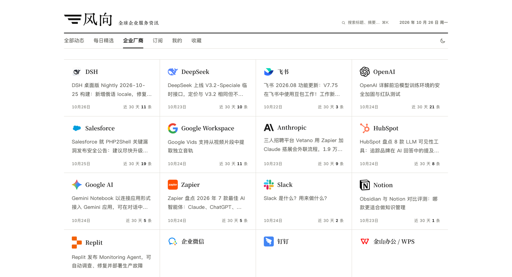

01
按需接入信源
支持 RSS、网页列表、JSON 接口、X 账号和外部推送，也可按来源定制抓取。默认示例预置 OpenAI、Google Workspace、Salesforce、Slack 等官方信源。
静态产品演示 · 不是实时服务
个人可以持续关注自己感兴趣的公司、主题和领域；企业可以按业务需要汇总招投标、销售线索、商机和客户相关信息。风向当前示例聚合全球企业服务官方动态，整理成中文信息流与每日精选。
这是 2026-10-26 的页面快照。演示站不连接数据库、不调用模型，也不会产生费用。

选择下方标签查看对应页面；点击图片可打开原图。

从配置好的信源采集内容，经筛选与整理后形成中文信息流；入选内容还可编为每日精选。
01
支持 RSS、网页列表、JSON 接口、X 账号和外部推送，也可按来源定制抓取。默认示例预置 OpenAI、Google Workspace、Salesforce、Slack 等官方信源。
02
内容整理为中文标题和摘要，并保留来源链接；正文允许站内展示时可阅读全文，已生成译文的文章支持中英逐段对照。
03
默认每天 08:00（北京时间）出刊，从此前 24 小时的动态中选取少量条目，按栏目编排；当期没有符合标准的内容时会明确说明。
04
内容可通过网页、RSS、公开 API 和 MCP 阅读；公开读取无需注册或 API Key，MCP 提供 7 个工具。
个人关注 · 企业业务
个人可以跟进自己关注的公司与主题；企业可以接入招投标、销售线索、商机和客户相关信息，按业务分类整理。常见信源可直接配置，非标准来源可定制抓取或通过外部推送接入。
查看定制指南 ↗个人 关注的公司、主题与领域
企业 招投标、线索、商机与客户相关信息
信源 RSS、网页、JSON、定制抓取
阅读 时间线、每日精选、RSS、API、MCP
这是静态演示，不是线上服务。 以上截图来自 2026 年 10 月 26 日的本地实例；演示站没有后台、没有数据库、没有模型调用，刷新不会产生新内容，也不会产生费用。